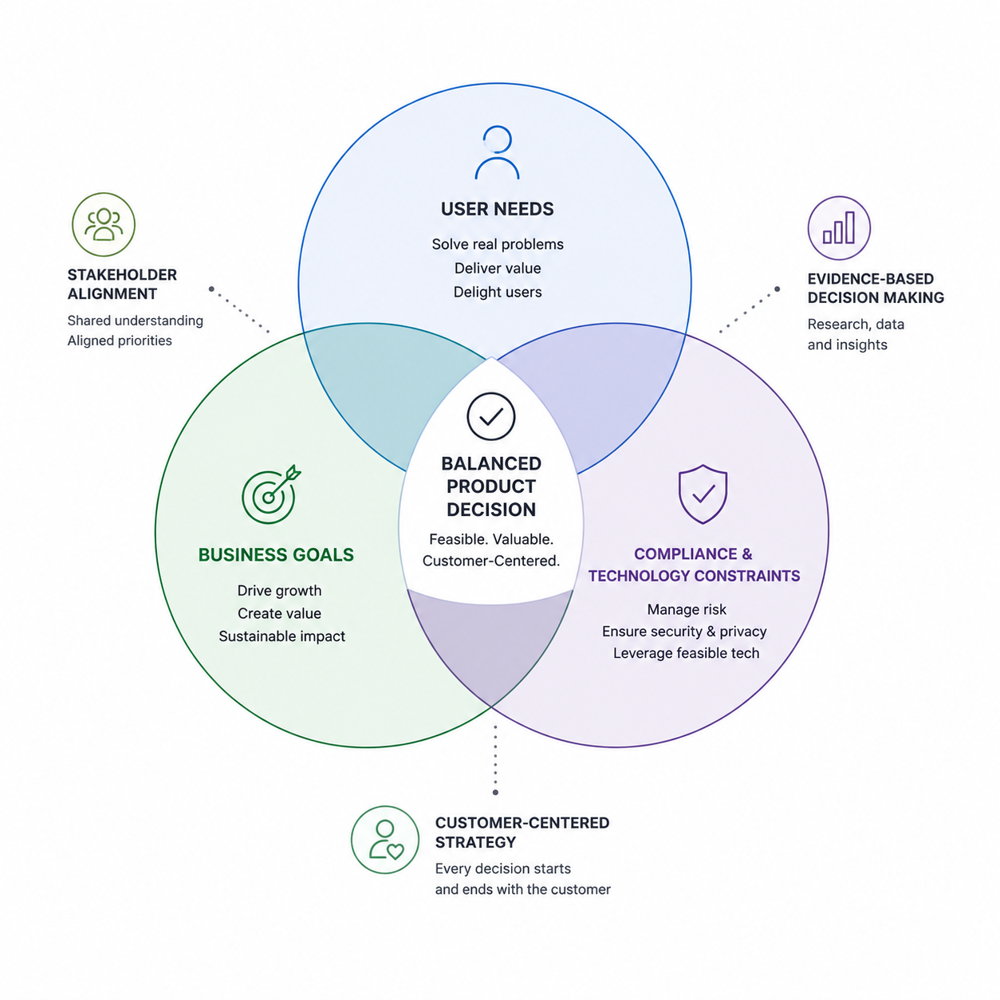
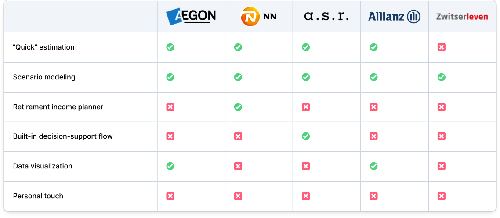
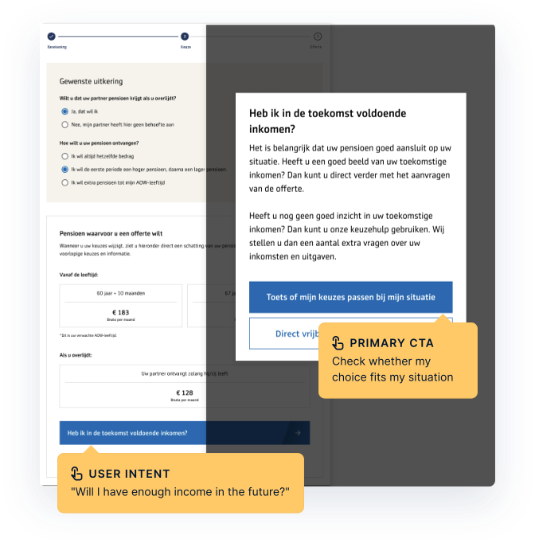
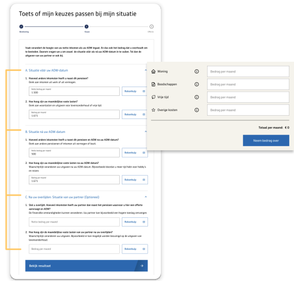
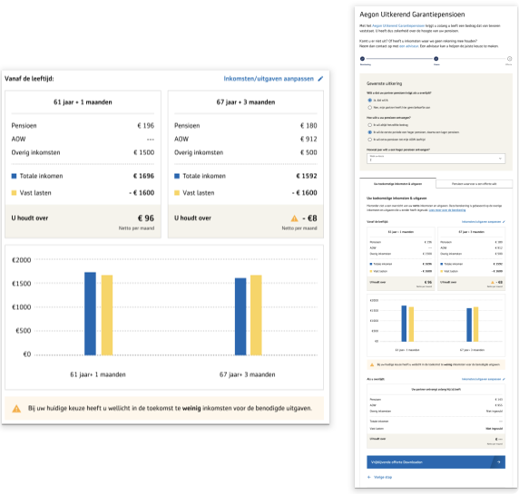

Continuous Interview
Interviewed 11 users aged 60-65, including 6 with accessibility needs (Dyslexia, Low literacy, Low digital skill).
- Can they describe what they learn?
- Is the explanation correct?
- How confident are they?
Aegon · 2024
Redesign Aegon’s pension payout calculator for elderly users while balancing regulatory compliance, engineering feasibility, and elderly accessibility to drive a +18% decision completion rate.


Executive Summary
Retirement is one of the most significant life transitions a person experiences. Yet, for many Aegon customers in the Netherlands aged 60 to 65, understanding their pension options was a source of confusion, uncertainty, and cognitive overload.
As the lead designer on this initiative, I drove the end-to-end redesign on Aegon’s pension payout calculator from research through final delivery. My goal was to transform a high-friction, 69% drop-off journey into a guided decision-support experience. By balancing Dutch AFM regulatory mandates, dynamic API constraints, and WCAG 2.1 AA accessibility standards, we redesigned the experience around customer understanding and confidence rather than simply generating quick quotes. The redesign resulted in an 18% increase in decision completion and an 8% increase in offer downloads.

Overview
Aegon is a leading Dutch financial services and pension provider. As customers near retirement, they must choose how to structure their pension payout, balancing options such as fixed lifetime payments, high-low payouts (receiving higher payouts in early retirement years), and partner pensions.
While the current calculator generated quick quotes, analytics showed a 69% drop-off at Step 3 (Payout Method Configuration). Many users struggled with gross/net payouts, driving support calls, lost qualified offer downloads, and rising operational costs.


Problem
Through conversations with stakeholders and reviews of customer support feedback, we identified three key challenges:
Users feared making irreversible decisions that could impact their financial future.
Showing too many financial options at once overwhelmed users.
Complex financial language and difficult interactions made the journey harder to understand and navigate.
Research & Discovery
Interviewed 11 users aged 60-65, including 6 with accessibility needs (Dyslexia, Low literacy, Low digital skill).

I reviewed AFM (Dutch Authority for the Financial Markets) reports to understand market trends and consumer insights.

I mapped competitors to understand industry patterns, opportunities, and gaps. A key insight was the value of adding a personal touch.
Key Usability Breakdown
Building on the insights uncovered in the previous phase, we mapped the existing experience and conducted an audit of the current process. This helped us identify critical touchpoints, understand where users faced uncertainty, and break down areas where trust and comprehension could be improved.
Hidden hover interactions and separated views made it difficult for users to connect their choices with real-time outcomes.
Users struggled to understand ages, amounts, and payment periods in the graph, leading to confusion about how the pension options work.
Dense legal language and an intimidating tone increased uncertainty instead of helping users feel informed and confident.
Conceptualization
Synthesizing research into actionable design principles. My approach focuses on high-trust financial interactions through psychological safety and cognitive clarity. From there, I started mapping out the features and interactions that would truly matter.
01
Slow down at key moments to provide emotional safety
02
Use self-provided data to personalize outcomes
03
Show how the choice shape future income to motivate to play around
Design was only half of the work. The other half was collaborating across teams to solve challenges that could have blocked the project. Here are two key roadblocks I worked through.
The team was working toward a tight launch deadline, but I identified usability risks for our older user in interpreting complex pension information. Instead of requesting more research time, I proposed a focused validation of the highest-risk parts of the journey and invited stakeholders to observe the usability sessions firsthand. Seeing users struggle with the experience created shared understanding, aligned user pain points directly with our product priorities, and helped the team quickly agree on targeted improvements without delaying the launch. It also established a more collaborative, scalable foundation for a research-driven design practice within the team.
Customers wanted to understand their expected net pension, but Legal raised concerns that showing an exact amount could create misleading expectations. I led cross-functional alignment between Design, Product, Engineering, and Legal to balance customer needs, regulatory requirements, and business goals.
Rather than removing valuable information, I reframed the challenge around helping users make informed decisions. I guided the team to transform complex financial calculations into clear, actionable insights by introducing estimated net income with transparent assumptions and explanations. This approach aligned teams around solving the underlying customer need while creating a more trustworthy experience.

Technical Feasibility

Iterations

Testing

Stakeholder Buy-in
Solution
As an optional tool, it appears through an overlay at Step 3 to minimize disruption and provide support at the moment it is most relevant.
Key Highlights
The tool is introduced through an overlay that preserves the user's context and progress while capturing attention and communicating key information.
Clear titles and action-oriented buttons drive quick comprehension.

By guiding users through three main life stages (before and after government retirement age, and after passing away), we helped them reflect on their expected savings and monthly expenses. This reduced complexity and enabled users to quickly understand their potential financial gap or surplus in real time.
Key Highlights
Groups questions by life stage so context builds naturally as users move through the flow.
Concise phrasing reduces cognitive load for users who may already feel overwhelmed.
Live calculations keep users in one place instead of bouncing to a separate tool.

After answering the questions, users are taken to the next page, where they can see how their choices affect their future pension income. Users can toggle between different payout options, seeing the direct impact on their monthly net income in real time.
Key Highlights
Their inputs from previous stages are grouped by life stage, helping users build context naturally and understand how each decision contributes to the final outcome.
Numbers and visuals live side by side so no one has to switch between different formats.
Make life stages sit next to each other so trade-offs are easy to spot.
A visible warning flags scenarios where income may fall short later on.

Final Outcome
The redesigned pension payout calculator was launched and evaluated against the legacy experience over a 3-month trial period. Intentionally slowing users down at key decision points increased comprehension and decision confidence.
While initial offer downloads increased by +8%, tracking whether these quotes successfully converted into signed long-term pension contracts 6 months post-launch remains an ongoing data initiative.
Beyond primary conversion metrics, this initiative helped transform Aegon’s internal product culture. By demonstrating that evidence-led design and intentional friction could support both compliance and business goals, we also influenced the design system team to better consider the needs of pension customers and improve accessibility for the target audience.